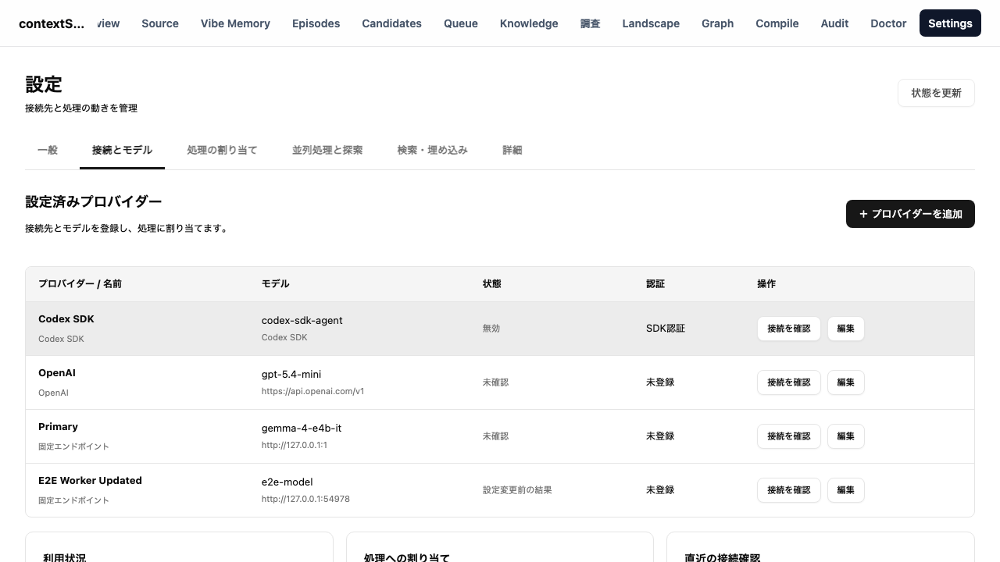

2026年10月4日。採用した一覧・登録更新モーダル・各行の接続確認・下部3領域を実装した。6タブへ既存機能を移し、旧設定パネル、フォーム変換、コントローラー13ファイルを削除した。正規入口は /setting/general、connections、assignments、execution、retrieval、advanced。実装計画は完了済み計画へ移した。
本書は製品コードの契約と隔離検証の記録である。接続一覧の値と画像は専用E2E環境のfixtureであり、運用中の設定・API Key・Queueを変更した記録ではない。

共通DTOはsrc/modules/settings/settings.types.tsとconnection-contracts.tsを正本とする。フロントのsettings-contracts.tsは再exportへ整理し、重複した設定型を削除した。settings-mutations.serviceがrevision、operation receipt、secret準備/確定を統括し、Settings serviceと接続serviceが同じ処理を呼ぶ。
| 操作 | URL | 意味 |
|---|---|---|
| GET | /api/settings/connections | 登録行、保存revision、保存済み設定の直近確認 |
| POST / PATCH / DELETE | /api/settings/connections と /connections/:id | 個別登録・更新・参照確認付き削除 |
| PATCH | /api/settings/sections | sectionの差分保存 |
| GET | /api/settings/operations/:id | 応答不明時の保存receipt照会 |
| POST / GET / DELETE | /api/settings/connection-tests と /connection-tests/:id | 有限の接続確認開始、結果照会、表示取消 |
| GET | /api/settings/connections/:id/runtime | 採用中Connectionの参照。割当・推論を開始しない |
| GET | /api/settings/agent-policy | native実行定数に基づく予算と停止条件、内容hashのrevision |
保存はexpectedRevisionとoperationIdを必須とし、同じoperationIdの同じ要求は同じ結果を返す。異なる要求への使い回しは拒否する。SQLiteの既存resident writerとPostgreSQL transactionで設定文書、secret参照、receiptを原子的に確定する。OS認証ストアへのI/Oはtransactionの外で準備し、失敗や競合で採用されなかった世代をGC journalで回収する。秘密値は文書・receipt・テスト結果へ保存しない。旧全置換PUTもrevision検証を通し、新UIからは呼ばない。既存のhealth APIは互換用途に維持し、新UIの成功判断には使わない。
各行の確認は保存済み設定、モーダルの確認は入力中のsnapshotへ送る。Cloudと固定モデルでは指定したEndpoint/モデルへ小さな推論を1回だけ実行し、401/403/404/429/500を成功扱いしない。CodexはSDK認証確認であることを表示する。入力中の結果は保存済み一覧に反映しない。設定または認証世代が変わった過去の結果はstale表示にする。
LARMの認証済みresident facadeは、共通contextStillプロファイル・要求Provider llmを維持する。保存済みの採用Connectionは通常処理と同じpermitを使用する。入力中の試験は通常Connectionと別の短い試験として実行し、稼働中の処理がある場合は試験枠を作らず待機理由を返す。通常処理を超える5本目を送らず、試験の取消で通常Connectionを解放しない。表示取消後も試験は完了・timeoutでpermitを戻す。再起動で結果不明の試験を自動再実行しない。
状態表示はresidentの採用済み管理器から読む。actualモデル/Endpoint、Profile、実効同時枠、使用中枠、期限、Provider WindowとConsumer実効Windowを表示する。設定変更後の旧Connectionは更新待ちと明示する。未採用・期限切れ・resident不在は未確認として扱う。capacityを確認できなければ1枠。LARM catalog掲載だけで利用中や4枠とは表示しない。
1回の実効Windowはmin(Provider Window, 32,768)。出力上限8,192、入力の安全余白はmax(Provider余白, 4,096)。Providerの出力予約が4,096以下なら32,768 Windowの入力概算上限は20,480となる。入力はUTF-8バイト数とメッセージ余白による保守的な概算で、tokenizerの実測値とは表示しない。Provider usageが返る場合の実消費とは別の量である。
1件の通常探索の累積予算は目標98,304、hard131,072、最終確認予約32,768、LLM最大8回。探索6回または目標予算で最終確認へ移る。進展なし2回、取得失敗3回でも打ち切る。DeepStillは最大1回の自動委譲とし、委譲時の累積目標262,144、hard393,216を別表示する。予算自体の自由編集は今回追加していない。DeepStillのloopback URLと専用の2認証参照は編集できる。
共通schemaの221項目を列挙した。保存先はruntime/settings.v1、認証値はruntime.secretの参照とOSストア。配列中の[]は行/targetを示す。各routeのkindやIDは接続選択で変更し、内部識別子を直接入力する必要はない。旧profileやmeasurementは互換理由を明示し、従来の有効項目を削除していない。タイムゾーンは従来どおりブラウザの表示設定として即時保存する。
| 保存path | 扱い | 移行先 | 利用先・理由 |
|---|---|---|---|
general.distillationPriority.targetPriorityOrder[] |
編集可能 | 一般 | Queue claim優先度・settings.runtime-cache |
providerPools[].id |
参照値 | 並列処理と探索（Pool） | Provider targetのIDは生成/保持。モデル・順序・容量・aging・leaseはPool editorで保存 |
providerPools[].label |
編集可能 | 並列処理と探索（Pool） | Provider targetのIDは生成/保持。モデル・順序・容量・aging・leaseはPool editorで保存 |
providerPools[].targets[].provider |
編集可能 | 並列処理と探索（Pool） | Provider targetのIDは生成/保持。モデル・順序・容量・aging・leaseはPool editorで保存 |
providerPools[].targets[].localLlmModelId |
編集可能 | 並列処理と探索（Pool） | Provider targetのIDは生成/保持。モデル・順序・容量・aging・leaseはPool editorで保存 |
providerPools[].targets[].deploymentSlot |
編集可能 | 並列処理と探索（Pool） | Provider targetのIDは生成/保持。モデル・順序・容量・aging・leaseはPool editorで保存 |
providerPools[].targets[].targetId |
参照値 | 並列処理と探索（Pool） | Provider targetのIDは生成/保持。モデル・順序・容量・aging・leaseはPool editorで保存 |
providerPools[].targets[].model |
編集可能 | 並列処理と探索（Pool） | Provider targetのIDは生成/保持。モデル・順序・容量・aging・leaseはPool editorで保存 |
providerPools[].targets[].connectionId |
編集可能 | 並列処理と探索（Pool） | Provider targetのIDは生成/保持。モデル・順序・容量・aging・leaseはPool editorで保存 |
providerPools[].maxConcurrent |
編集可能 | 並列処理と探索（Pool） | Provider targetのIDは生成/保持。モデル・順序・容量・aging・leaseはPool editorで保存 |
providerPools[].staleLeaseSeconds |
編集可能 | 並列処理と探索（Pool） | Provider targetのIDは生成/保持。モデル・順序・容量・aging・leaseはPool editorで保存 |
providerPools[].enabled |
編集可能 | 並列処理と探索（Pool） | Provider targetのIDは生成/保持。モデル・順序・容量・aging・leaseはPool editorで保存 |
providerPools[].lowPriorityAgingSeconds |
編集可能 | 並列処理と探索（Pool） | Provider targetのIDは生成/保持。モデル・順序・容量・aging・leaseはPool editorで保存 |
providers.openai.enabled |
編集可能 | 接続とモデル（種類別モーダル） | provider-connections・settings.runtime-cache・native Provider manager |
providers.openai.apiBaseUrl |
編集可能 | 接続とモデル（種類別モーダル） | provider-connections・settings.runtime-cache・native Provider manager |
providers.openai.model |
編集可能 | 接続とモデル（種類別モーダル） | provider-connections・settings.runtime-cache・native Provider manager |
providers.azure-openai.enabled |
編集可能 | 接続とモデル（種類別モーダル） | provider-connections・settings.runtime-cache・native Provider manager |
providers.azure-openai.apiBaseUrl |
互換読取・同期 | 接続とモデル（最初の行から同期） | settings.runtime-cacheと既存Provider factory |
providers.azure-openai.apiPath |
互換読取・同期 | 接続とモデル（最初の行から同期） | settings.runtime-cacheと既存Provider factory |
providers.azure-openai.apiVersion |
互換読取・同期 | 接続とモデル（最初の行から同期） | settings.runtime-cacheと既存Provider factory |
providers.azure-openai.model |
互換読取・同期 | 接続とモデル（最初の行から同期） | settings.runtime-cacheと既存Provider factory |
providers.azure-openai.deployments[].id |
参照値 | 接続とモデル（安定ID、自動付与） | connection-contracts・Provider/Pool参照 |
providers.azure-openai.deployments[].credentialMode |
編集可能 | Azureモーダルの認証操作 | 専用キーまたは最初のAzureキーの共有を選択 |
providers.azure-openai.deployments[].name |
編集可能 | 接続とモデル（種類別モーダル） | provider-connections・settings.runtime-cache・native Provider manager |
providers.azure-openai.deployments[].apiBaseUrl |
編集可能 | 接続とモデル（種類別モーダル） | provider-connections・settings.runtime-cache・native Provider manager |
providers.azure-openai.deployments[].apiPath |
編集可能 | 接続とモデル（種類別モーダル） | provider-connections・settings.runtime-cache・native Provider manager |
providers.azure-openai.deployments[].apiVersion |
編集可能 | 接続とモデル（種類別モーダル） | provider-connections・settings.runtime-cache・native Provider manager |
providers.azure-openai.deployments[].model |
編集可能 | 接続とモデル（種類別モーダル） | provider-connections・settings.runtime-cache・native Provider manager |
providers.bedrock.enabled |
編集可能 | 接続とモデル（種類別モーダル） | provider-connections・settings.runtime-cache・native Provider manager |
providers.bedrock.region |
編集可能 | 接続とモデル（種類別モーダル） | provider-connections・settings.runtime-cache・native Provider manager |
providers.bedrock.profile |
編集可能 | 接続とモデル（種類別モーダル） | provider-connections・settings.runtime-cache・native Provider manager |
providers.bedrock.model |
編集可能 | 接続とモデル（種類別モーダル） | provider-connections・settings.runtime-cache・native Provider manager |
providers.local-llm.enabled |
編集可能 | 接続とモデル（種類別モーダル） | provider-connections・settings.runtime-cache・native Provider manager |
providers.local-llm.apiBaseUrl |
互換読取・同期 | 接続とモデル（最初の行から同期） | settings.runtime-cacheと既存Provider factory |
providers.local-llm.apiPath |
互換読取・同期 | 接続とモデル（最初の行から同期） | settings.runtime-cacheと既存Provider factory |
providers.local-llm.model |
互換読取・同期 | 接続とモデル（最初の行から同期） | settings.runtime-cacheと既存Provider factory |
providers.local-llm.models[].id |
参照値 | 接続とモデル（安定ID、自動付与） | connection-contracts・Provider/Pool参照 |
providers.local-llm.models[].name |
編集可能 | 接続とモデル（種類別モーダル） | provider-connections・settings.runtime-cache・native Provider manager |
providers.local-llm.models[].apiBaseUrl |
編集可能 | 接続とモデル（種類別モーダル） | provider-connections・settings.runtime-cache・native Provider manager |
providers.local-llm.models[].apiPath |
編集可能 | 接続とモデル（種類別モーダル） | provider-connections・settings.runtime-cache・native Provider manager |
providers.local-llm.models[].model |
編集可能 | 接続とモデル（種類別モーダル） | provider-connections・settings.runtime-cache・native Provider manager |
providers.larm-agent-connection.enabled |
編集可能 | 接続とモデル（種類別モーダル） | provider-connections・settings.runtime-cache・native Provider manager |
providers.larm-agent-connection.connections[].id |
編集可能 | 接続とモデル（種類別モーダル） | provider-connections・settings.runtime-cache・native Provider manager |
providers.larm-agent-connection.connections[].controlBaseUrl |
編集可能 | 接続とモデル（種類別モーダル） | provider-connections・settings.runtime-cache・native Provider manager |
providers.larm-agent-connection.connections[].agentProfile |
互換読取のみ | 接続とモデル（contextStill固定） | 旧profile指定を読取時に除去。LARM要求は共通profile契約を使用 |
providers.larm-agent-connection.connections[].audience |
編集可能 | 接続とモデル（種類別モーダル） | provider-connections・settings.runtime-cache・native Provider manager |
providers.larm-agent-connection.connections[].availabilityPollMs |
編集可能 | 接続とモデル（種類別モーダル） | provider-connections・settings.runtime-cache・native Provider manager |
providers.larm-agent-connection.connections[].availabilityTimeoutMs |
編集可能 | 接続とモデル（種類別モーダル） | provider-connections・settings.runtime-cache・native Provider manager |
providers.larm-agent-connection.connections[].controlTimeoutMs |
編集可能 | 接続とモデル（種類別モーダル） | provider-connections・settings.runtime-cache・native Provider manager |
providers.larm-agent-connection.connections[].readyTimeoutMs |
編集可能 | 接続とモデル（種類別モーダル） | provider-connections・settings.runtime-cache・native Provider manager |
providers.larm-agent-connection.connections[].ttlSeconds |
編集可能 | 接続とモデル（種類別モーダル） | provider-connections・settings.runtime-cache・native Provider manager |
providers.larm-agent-connection.connections[].requestTimeoutMs |
編集可能 | 接続とモデル（種類別モーダル） | provider-connections・settings.runtime-cache・native Provider manager |
providers.larm-agent-connection.connections[].maxConcurrentRequests |
編集可能 | 接続とモデル（種類別モーダル） | provider-connections・settings.runtime-cache・native Provider manager |
providers.codex.enabled |
編集可能 | 接続とモデル（種類別モーダル） | provider-connections・settings.runtime-cache・native Provider manager |
providers.codex.model |
編集可能 | 接続とモデル（種類別モーダル） | provider-connections・settings.runtime-cache・native Provider manager |
taskRouting.findCandidate.source.kind |
編集可能 | 処理の割り当て（独立route editor） | 接続/Pool/自動選択で種別と参照を設定。model・fallback・Azure slotも維持 |
taskRouting.findCandidate.source.provider |
編集可能 | 処理の割り当て（独立route editor） | 接続/Pool/自動選択で種別と参照を設定。model・fallback・Azure slotも維持 |
taskRouting.findCandidate.source.model |
編集可能 | 処理の割り当て（独立route editor） | 接続/Pool/自動選択で種別と参照を設定。model・fallback・Azure slotも維持 |
taskRouting.findCandidate.source.localLlmModel |
編集可能 | 処理の割り当て（独立route editor） | 接続/Pool/自動選択で種別と参照を設定。model・fallback・Azure slotも維持 |
taskRouting.findCandidate.source.providerPoolId |
編集可能 | 処理の割り当て（独立route editor） | 接続/Pool/自動選択で種別と参照を設定。model・fallback・Azure slotも維持 |
taskRouting.findCandidate.source.fallback[] |
編集可能 | 処理の割り当て（独立route editor） | 接続/Pool/自動選択で種別と参照を設定。model・fallback・Azure slotも維持 |
taskRouting.findCandidate.source.azureDeploymentSlots[] |
編集可能 | 処理の割り当て（独立route editor） | 接続/Pool/自動選択で種別と参照を設定。model・fallback・Azure slotも維持 |
taskRouting.findCandidate.source.connectionId |
編集可能 | 処理の割り当て（独立route editor） | 接続/Pool/自動選択で種別と参照を設定。model・fallback・Azure slotも維持 |
taskRouting.findCandidate.vibe.kind |
編集可能 | 処理の割り当て（独立route editor） | 接続/Pool/自動選択で種別と参照を設定。model・fallback・Azure slotも維持 |
taskRouting.findCandidate.vibe.provider |
編集可能 | 処理の割り当て（独立route editor） | 接続/Pool/自動選択で種別と参照を設定。model・fallback・Azure slotも維持 |
taskRouting.findCandidate.vibe.model |
編集可能 | 処理の割り当て（独立route editor） | 接続/Pool/自動選択で種別と参照を設定。model・fallback・Azure slotも維持 |
taskRouting.findCandidate.vibe.localLlmModel |
編集可能 | 処理の割り当て（独立route editor） | 接続/Pool/自動選択で種別と参照を設定。model・fallback・Azure slotも維持 |
taskRouting.findCandidate.vibe.providerPoolId |
編集可能 | 処理の割り当て（独立route editor） | 接続/Pool/自動選択で種別と参照を設定。model・fallback・Azure slotも維持 |
taskRouting.findCandidate.vibe.fallback[] |
編集可能 | 処理の割り当て（独立route editor） | 接続/Pool/自動選択で種別と参照を設定。model・fallback・Azure slotも維持 |
taskRouting.findCandidate.vibe.azureDeploymentSlots[] |
編集可能 | 処理の割り当て（独立route editor） | 接続/Pool/自動選択で種別と参照を設定。model・fallback・Azure slotも維持 |
taskRouting.findCandidate.vibe.connectionId |
編集可能 | 処理の割り当て（独立route editor） | 接続/Pool/自動選択で種別と参照を設定。model・fallback・Azure slotも維持 |
taskRouting.findCandidate.throttling.backgroundEnabled |
編集可能 | 並列処理と探索（Findingの実行間隔） | Queue scheduler・settings.runtime-cache |
taskRouting.findCandidate.throttling.interactiveWindowSeconds |
編集可能 | 並列処理と探索（Findingの実行間隔） | Queue scheduler・settings.runtime-cache |
taskRouting.findCandidate.throttling.recentBlockSeconds |
編集可能 | 並列処理と探索（Findingの実行間隔） | Queue scheduler・settings.runtime-cache |
taskRouting.findCandidate.throttling.minIntervalSeconds |
編集可能 | 並列処理と探索（Findingの実行間隔） | Queue scheduler・settings.runtime-cache |
taskRouting.findCandidate.throttling.mediumIntervalSeconds |
編集可能 | 並列処理と探索（Findingの実行間隔） | Queue scheduler・settings.runtime-cache |
taskRouting.findCandidate.throttling.busyIntervalSeconds |
編集可能 | 並列処理と探索（Findingの実行間隔） | Queue scheduler・settings.runtime-cache |
taskRouting.findCandidate.throttling.maxIntervalSeconds |
編集可能 | 並列処理と探索（Findingの実行間隔） | Queue scheduler・settings.runtime-cache |
taskRouting.findCandidate.throttling.rateLimitCooldownSeconds |
編集可能 | 並列処理と探索（Findingの実行間隔） | Queue scheduler・settings.runtime-cache |
taskRouting.findCandidate.throttling.jitterSeconds |
編集可能 | 並列処理と探索（Findingの実行間隔） | Queue scheduler・settings.runtime-cache |
taskRouting.webSourceResearch.kind |
編集可能 | 処理の割り当て（独立route editor） | 接続/Pool/自動選択で種別と参照を設定。model・fallback・Azure slotも維持 |
taskRouting.webSourceResearch.provider |
編集可能 | 処理の割り当て（独立route editor） | 接続/Pool/自動選択で種別と参照を設定。model・fallback・Azure slotも維持 |
taskRouting.webSourceResearch.model |
編集可能 | 処理の割り当て（独立route editor） | 接続/Pool/自動選択で種別と参照を設定。model・fallback・Azure slotも維持 |
taskRouting.webSourceResearch.localLlmModel |
編集可能 | 処理の割り当て（独立route editor） | 接続/Pool/自動選択で種別と参照を設定。model・fallback・Azure slotも維持 |
taskRouting.webSourceResearch.providerPoolId |
編集可能 | 処理の割り当て（独立route editor） | 接続/Pool/自動選択で種別と参照を設定。model・fallback・Azure slotも維持 |
taskRouting.webSourceResearch.fallback[] |
編集可能 | 処理の割り当て（独立route editor） | 接続/Pool/自動選択で種別と参照を設定。model・fallback・Azure slotも維持 |
taskRouting.webSourceResearch.azureDeploymentSlots[] |
編集可能 | 処理の割り当て（独立route editor） | 接続/Pool/自動選択で種別と参照を設定。model・fallback・Azure slotも維持 |
taskRouting.webSourceResearch.connectionId |
編集可能 | 処理の割り当て（独立route editor） | 接続/Pool/自動選択で種別と参照を設定。model・fallback・Azure slotも維持 |
taskRouting.deepStillManual.kind |
編集可能 | 処理の割り当て（独立route editor） | 接続/Pool/自動選択で種別と参照を設定。model・fallback・Azure slotも維持 |
taskRouting.deepStillManual.provider |
編集可能 | 処理の割り当て（独立route editor） | 接続/Pool/自動選択で種別と参照を設定。model・fallback・Azure slotも維持 |
taskRouting.deepStillManual.model |
編集可能 | 処理の割り当て（独立route editor） | 接続/Pool/自動選択で種別と参照を設定。model・fallback・Azure slotも維持 |
taskRouting.deepStillManual.localLlmModel |
編集可能 | 処理の割り当て（独立route editor） | 接続/Pool/自動選択で種別と参照を設定。model・fallback・Azure slotも維持 |
taskRouting.deepStillManual.providerPoolId |
編集可能 | 処理の割り当て（独立route editor） | 接続/Pool/自動選択で種別と参照を設定。model・fallback・Azure slotも維持 |
taskRouting.deepStillManual.fallback[] |
編集可能 | 処理の割り当て（独立route editor） | 接続/Pool/自動選択で種別と参照を設定。model・fallback・Azure slotも維持 |
taskRouting.deepStillManual.azureDeploymentSlots[] |
編集可能 | 処理の割り当て（独立route editor） | 接続/Pool/自動選択で種別と参照を設定。model・fallback・Azure slotも維持 |
taskRouting.deepStillManual.connectionId |
編集可能 | 処理の割り当て（独立route editor） | 接続/Pool/自動選択で種別と参照を設定。model・fallback・Azure slotも維持 |
taskRouting.episodeDistiller.kind |
編集可能 | 処理の割り当て（独立route editor） | 接続/Pool/自動選択で種別と参照を設定。model・fallback・Azure slotも維持 |
taskRouting.episodeDistiller.provider |
編集可能 | 処理の割り当て（独立route editor） | 接続/Pool/自動選択で種別と参照を設定。model・fallback・Azure slotも維持 |
taskRouting.episodeDistiller.model |
編集可能 | 処理の割り当て（独立route editor） | 接続/Pool/自動選択で種別と参照を設定。model・fallback・Azure slotも維持 |
taskRouting.episodeDistiller.localLlmModel |
編集可能 | 処理の割り当て（独立route editor） | 接続/Pool/自動選択で種別と参照を設定。model・fallback・Azure slotも維持 |
taskRouting.episodeDistiller.providerPoolId |
編集可能 | 処理の割り当て（独立route editor） | 接続/Pool/自動選択で種別と参照を設定。model・fallback・Azure slotも維持 |
taskRouting.episodeDistiller.fallback[] |
編集可能 | 処理の割り当て（独立route editor） | 接続/Pool/自動選択で種別と参照を設定。model・fallback・Azure slotも維持 |
taskRouting.episodeDistiller.azureDeploymentSlots[] |
編集可能 | 処理の割り当て（独立route editor） | 接続/Pool/自動選択で種別と参照を設定。model・fallback・Azure slotも維持 |
taskRouting.episodeDistiller.connectionId |
編集可能 | 処理の割り当て（独立route editor） | 接続/Pool/自動選択で種別と参照を設定。model・fallback・Azure slotも維持 |
taskRouting.coverEvidence.sourceSupport.kind |
編集可能 | 処理の割り当て（独立route editor） | 接続/Pool/自動選択で種別と参照を設定。model・fallback・Azure slotも維持 |
taskRouting.coverEvidence.sourceSupport.provider |
編集可能 | 処理の割り当て（独立route editor） | 接続/Pool/自動選択で種別と参照を設定。model・fallback・Azure slotも維持 |
taskRouting.coverEvidence.sourceSupport.model |
編集可能 | 処理の割り当て（独立route editor） | 接続/Pool/自動選択で種別と参照を設定。model・fallback・Azure slotも維持 |
taskRouting.coverEvidence.sourceSupport.localLlmModel |
編集可能 | 処理の割り当て（独立route editor） | 接続/Pool/自動選択で種別と参照を設定。model・fallback・Azure slotも維持 |
taskRouting.coverEvidence.sourceSupport.providerPoolId |
編集可能 | 処理の割り当て（独立route editor） | 接続/Pool/自動選択で種別と参照を設定。model・fallback・Azure slotも維持 |
taskRouting.coverEvidence.sourceSupport.fallback[] |
編集可能 | 処理の割り当て（独立route editor） | 接続/Pool/自動選択で種別と参照を設定。model・fallback・Azure slotも維持 |
taskRouting.coverEvidence.sourceSupport.azureDeploymentSlots[] |
編集可能 | 処理の割り当て（独立route editor） | 接続/Pool/自動選択で種別と参照を設定。model・fallback・Azure slotも維持 |
taskRouting.coverEvidence.sourceSupport.connectionId |
編集可能 | 処理の割り当て（独立route editor） | 接続/Pool/自動選択で種別と参照を設定。model・fallback・Azure slotも維持 |
taskRouting.coverEvidence.externalEvidence.kind |
編集可能 | 処理の割り当て（独立route editor） | 接続/Pool/自動選択で種別と参照を設定。model・fallback・Azure slotも維持 |
taskRouting.coverEvidence.externalEvidence.provider |
編集可能 | 処理の割り当て（独立route editor） | 接続/Pool/自動選択で種別と参照を設定。model・fallback・Azure slotも維持 |
taskRouting.coverEvidence.externalEvidence.model |
編集可能 | 処理の割り当て（独立route editor） | 接続/Pool/自動選択で種別と参照を設定。model・fallback・Azure slotも維持 |
taskRouting.coverEvidence.externalEvidence.localLlmModel |
編集可能 | 処理の割り当て（独立route editor） | 接続/Pool/自動選択で種別と参照を設定。model・fallback・Azure slotも維持 |
taskRouting.coverEvidence.externalEvidence.providerPoolId |
編集可能 | 処理の割り当て（独立route editor） | 接続/Pool/自動選択で種別と参照を設定。model・fallback・Azure slotも維持 |
taskRouting.coverEvidence.externalEvidence.fallback[] |
編集可能 | 処理の割り当て（独立route editor） | 接続/Pool/自動選択で種別と参照を設定。model・fallback・Azure slotも維持 |
taskRouting.coverEvidence.externalEvidence.azureDeploymentSlots[] |
編集可能 | 処理の割り当て（独立route editor） | 接続/Pool/自動選択で種別と参照を設定。model・fallback・Azure slotも維持 |
taskRouting.coverEvidence.externalEvidence.connectionId |
編集可能 | 処理の割り当て（独立route editor） | 接続/Pool/自動選択で種別と参照を設定。model・fallback・Azure slotも維持 |
taskRouting.coverEvidence.mcpEvidence.kind |
編集可能 | 処理の割り当て（独立route editor） | 接続/Pool/自動選択で種別と参照を設定。model・fallback・Azure slotも維持 |
taskRouting.coverEvidence.mcpEvidence.provider |
編集可能 | 処理の割り当て（独立route editor） | 接続/Pool/自動選択で種別と参照を設定。model・fallback・Azure slotも維持 |
taskRouting.coverEvidence.mcpEvidence.model |
編集可能 | 処理の割り当て（独立route editor） | 接続/Pool/自動選択で種別と参照を設定。model・fallback・Azure slotも維持 |
taskRouting.coverEvidence.mcpEvidence.localLlmModel |
編集可能 | 処理の割り当て（独立route editor） | 接続/Pool/自動選択で種別と参照を設定。model・fallback・Azure slotも維持 |
taskRouting.coverEvidence.mcpEvidence.providerPoolId |
編集可能 | 処理の割り当て（独立route editor） | 接続/Pool/自動選択で種別と参照を設定。model・fallback・Azure slotも維持 |
taskRouting.coverEvidence.mcpEvidence.fallback[] |
編集可能 | 処理の割り当て（独立route editor） | 接続/Pool/自動選択で種別と参照を設定。model・fallback・Azure slotも維持 |
taskRouting.coverEvidence.mcpEvidence.azureDeploymentSlots[] |
編集可能 | 処理の割り当て（独立route editor） | 接続/Pool/自動選択で種別と参照を設定。model・fallback・Azure slotも維持 |
taskRouting.coverEvidence.mcpEvidence.connectionId |
編集可能 | 処理の割り当て（独立route editor） | 接続/Pool/自動選択で種別と参照を設定。model・fallback・Azure slotも維持 |
taskRouting.deadZoneMergeReview.kind |
編集可能 | 処理の割り当て（独立route editor） | 接続/Pool/自動選択で種別と参照を設定。model・fallback・Azure slotも維持 |
taskRouting.deadZoneMergeReview.provider |
編集可能 | 処理の割り当て（独立route editor） | 接続/Pool/自動選択で種別と参照を設定。model・fallback・Azure slotも維持 |
taskRouting.deadZoneMergeReview.model |
編集可能 | 処理の割り当て（独立route editor） | 接続/Pool/自動選択で種別と参照を設定。model・fallback・Azure slotも維持 |
taskRouting.deadZoneMergeReview.localLlmModel |
編集可能 | 処理の割り当て（独立route editor） | 接続/Pool/自動選択で種別と参照を設定。model・fallback・Azure slotも維持 |
taskRouting.deadZoneMergeReview.providerPoolId |
編集可能 | 処理の割り当て（独立route editor） | 接続/Pool/自動選択で種別と参照を設定。model・fallback・Azure slotも維持 |
taskRouting.deadZoneMergeReview.fallback[] |
編集可能 | 処理の割り当て（独立route editor） | 接続/Pool/自動選択で種別と参照を設定。model・fallback・Azure slotも維持 |
taskRouting.deadZoneMergeReview.azureDeploymentSlots[] |
編集可能 | 処理の割り当て（独立route editor） | 接続/Pool/自動選択で種別と参照を設定。model・fallback・Azure slotも維持 |
taskRouting.deadZoneMergeReview.connectionId |
編集可能 | 処理の割り当て（独立route editor） | 接続/Pool/自動選択で種別と参照を設定。model・fallback・Azure slotも維持 |
taskRouting.landscapeCuration.kind |
編集可能 | 処理の割り当て（独立route editor） | 接続/Pool/自動選択で種別と参照を設定。model・fallback・Azure slotも維持 |
taskRouting.landscapeCuration.provider |
編集可能 | 処理の割り当て（独立route editor） | 接続/Pool/自動選択で種別と参照を設定。model・fallback・Azure slotも維持 |
taskRouting.landscapeCuration.model |
編集可能 | 処理の割り当て（独立route editor） | 接続/Pool/自動選択で種別と参照を設定。model・fallback・Azure slotも維持 |
taskRouting.landscapeCuration.localLlmModel |
編集可能 | 処理の割り当て（独立route editor） | 接続/Pool/自動選択で種別と参照を設定。model・fallback・Azure slotも維持 |
taskRouting.landscapeCuration.providerPoolId |
編集可能 | 処理の割り当て（独立route editor） | 接続/Pool/自動選択で種別と参照を設定。model・fallback・Azure slotも維持 |
taskRouting.landscapeCuration.fallback[] |
編集可能 | 処理の割り当て（独立route editor） | 接続/Pool/自動選択で種別と参照を設定。model・fallback・Azure slotも維持 |
taskRouting.landscapeCuration.azureDeploymentSlots[] |
編集可能 | 処理の割り当て（独立route editor） | 接続/Pool/自動選択で種別と参照を設定。model・fallback・Azure slotも維持 |
taskRouting.landscapeCuration.connectionId |
編集可能 | 処理の割り当て（独立route editor） | 接続/Pool/自動選択で種別と参照を設定。model・fallback・Azure slotも維持 |
taskRouting.finalizeDistille.kind |
編集可能 | 処理の割り当て（独立route editor） | 接続/Pool/自動選択で種別と参照を設定。model・fallback・Azure slotも維持 |
taskRouting.finalizeDistille.provider |
編集可能 | 処理の割り当て（独立route editor） | 接続/Pool/自動選択で種別と参照を設定。model・fallback・Azure slotも維持 |
taskRouting.finalizeDistille.model |
編集可能 | 処理の割り当て（独立route editor） | 接続/Pool/自動選択で種別と参照を設定。model・fallback・Azure slotも維持 |
taskRouting.finalizeDistille.localLlmModel |
編集可能 | 処理の割り当て（独立route editor） | 接続/Pool/自動選択で種別と参照を設定。model・fallback・Azure slotも維持 |
taskRouting.finalizeDistille.providerPoolId |
編集可能 | 処理の割り当て（独立route editor） | 接続/Pool/自動選択で種別と参照を設定。model・fallback・Azure slotも維持 |
taskRouting.finalizeDistille.fallback[] |
編集可能 | 処理の割り当て（独立route editor） | 接続/Pool/自動選択で種別と参照を設定。model・fallback・Azure slotも維持 |
taskRouting.finalizeDistille.azureDeploymentSlots[] |
編集可能 | 処理の割り当て（独立route editor） | 接続/Pool/自動選択で種別と参照を設定。model・fallback・Azure slotも維持 |
taskRouting.finalizeDistille.connectionId |
編集可能 | 処理の割り当て（独立route editor） | 接続/Pool/自動選択で種別と参照を設定。model・fallback・Azure slotも維持 |
taskRouting.mergeActivationFinalize.kind |
編集可能 | 処理の割り当て（独立route editor） | 接続/Pool/自動選択で種別と参照を設定。model・fallback・Azure slotも維持 |
taskRouting.mergeActivationFinalize.provider |
編集可能 | 処理の割り当て（独立route editor） | 接続/Pool/自動選択で種別と参照を設定。model・fallback・Azure slotも維持 |
taskRouting.mergeActivationFinalize.model |
編集可能 | 処理の割り当て（独立route editor） | 接続/Pool/自動選択で種別と参照を設定。model・fallback・Azure slotも維持 |
taskRouting.mergeActivationFinalize.localLlmModel |
編集可能 | 処理の割り当て（独立route editor） | 接続/Pool/自動選択で種別と参照を設定。model・fallback・Azure slotも維持 |
taskRouting.mergeActivationFinalize.providerPoolId |
編集可能 | 処理の割り当て（独立route editor） | 接続/Pool/自動選択で種別と参照を設定。model・fallback・Azure slotも維持 |
taskRouting.mergeActivationFinalize.fallback[] |
編集可能 | 処理の割り当て（独立route editor） | 接続/Pool/自動選択で種別と参照を設定。model・fallback・Azure slotも維持 |
taskRouting.mergeActivationFinalize.azureDeploymentSlots[] |
編集可能 | 処理の割り当て（独立route editor） | 接続/Pool/自動選択で種別と参照を設定。model・fallback・Azure slotも維持 |
taskRouting.mergeActivationFinalize.connectionId |
編集可能 | 処理の割り当て（独立route editor） | 接続/Pool/自動選択で種別と参照を設定。model・fallback・Azure slotも維持 |
taskRouting.agenticCompile.enabled |
編集可能 | 詳細（Compileの実行設定） | Context Compiler・settings.runtime-cache |
taskRouting.agenticCompile.provider |
編集可能 | 処理の割り当て（独立route editor） | 接続/Pool/自動選択で種別と参照を設定。model・fallback・Azure slotも維持 |
taskRouting.agenticCompile.model |
編集可能 | 処理の割り当て（独立route editor） | 接続/Pool/自動選択で種別と参照を設定。model・fallback・Azure slotも維持 |
taskRouting.agenticCompile.localLlmModel |
編集可能 | 処理の割り当て（独立route editor） | 接続/Pool/自動選択で種別と参照を設定。model・fallback・Azure slotも維持 |
taskRouting.agenticCompile.fallback[] |
編集可能 | 処理の割り当て（独立route editor） | 接続/Pool/自動選択で種別と参照を設定。model・fallback・Azure slotも維持 |
taskRouting.agenticCompile.azureDeploymentSlots[] |
編集可能 | 処理の割り当て（独立route editor） | 接続/Pool/自動選択で種別と参照を設定。model・fallback・Azure slotも維持 |
taskRouting.agenticCompile.timeoutMs |
編集可能 | 詳細（Compileの実行設定） | Context Compiler・settings.runtime-cache |
taskRouting.agenticCompile.maxTokens |
編集可能 | 詳細（Compileの実行設定） | Context Compiler・settings.runtime-cache |
search.providerOrder[] |
編集可能 | 検索・埋め込み（検索） | 検索Provider・取得処理・settings.runtime-cache |
search.maxProviderAttempts |
編集可能 | 検索・埋め込み（検索） | 検索Provider・取得処理・settings.runtime-cache |
search.resultCount |
編集可能 | 検索・埋め込み（検索） | 検索Provider・取得処理・settings.runtime-cache |
search.timeoutMs |
編集可能 | 検索・埋め込み（検索） | 検索Provider・取得処理・settings.runtime-cache |
search.rateLimitCooldownSeconds |
編集可能 | 検索・埋め込み（検索） | 検索Provider・取得処理・settings.runtime-cache |
search.providers.brave.enabled |
編集可能 | 検索・埋め込み（検索） | 検索Provider・取得処理・settings.runtime-cache |
search.providers.exa.enabled |
編集可能 | 検索・埋め込み（検索） | 検索Provider・取得処理・settings.runtime-cache |
search.providers.duckduckgo.enabled |
編集可能 | 検索・埋め込み（検索） | 検索Provider・取得処理・settings.runtime-cache |
embedding.provider |
編集可能 | 検索・埋め込み（埋め込み） | 埋め込みProvider・settings.runtime-cache |
embedding.daemonUrl |
編集可能 | 検索・埋め込み（埋め込み） | 埋め込みProvider・settings.runtime-cache |
embedding.openaiModel |
編集可能 | 検索・埋め込み（埋め込み） | 埋め込みProvider・settings.runtime-cache |
embedding.timeoutMs |
編集可能 | 検索・埋め込み（埋め込み） | 埋め込みProvider・settings.runtime-cache |
distillationRuntime.timeoutMs |
編集可能 | 詳細（従来の処理とツールの制限） | 従来の処理用の上限を維持。新AgentRuntimeのWindowとは別 |
distillationRuntime.candidateTimeoutMs |
編集可能 | 詳細（従来の処理とツールの制限） | 従来の処理用の上限を維持。新AgentRuntimeのWindowとは別 |
distillationRuntime.maxToolRounds |
編集可能 | 詳細（従来の処理とツールの制限） | 従来の処理用の上限を維持。新AgentRuntimeのWindowとは別 |
distillationRuntime.findCandidateTimeoutMs |
編集可能 | 詳細（従来の処理とツールの制限） | 従来の処理用の上限を維持。新AgentRuntimeのWindowとは別 |
distillationRuntime.findCandidateMaxToolCalls |
編集可能 | 詳細（従来の処理とツールの制限） | 従来の処理用の上限を維持。新AgentRuntimeのWindowとは別 |
distillationRuntime.coverEvidenceTimeoutMs |
編集可能 | 詳細（従来の処理とツールの制限） | 従来の処理用の上限を維持。新AgentRuntimeのWindowとは別 |
distillationRuntime.coverEvidenceSearchMaxCalls |
編集可能 | 詳細（従来の処理とツールの制限） | 従来の処理用の上限を維持。新AgentRuntimeのWindowとは別 |
distillationRuntime.coverEvidenceFetchMaxCalls |
編集可能 | 詳細（従来の処理とツールの制限） | 従来の処理用の上限を維持。新AgentRuntimeのWindowとは別 |
distillationRuntime.coverEvidenceFetchMaxTokensPerSite |
編集可能 | 詳細（従来の処理とツールの制限） | 従来の処理用の上限を維持。新AgentRuntimeのWindowとは別 |
distillationRuntime.toolTimeoutMs |
編集可能 | 詳細（従来の処理とツールの制限） | 従来の処理用の上限を維持。新AgentRuntimeのWindowとは別 |
distillationRuntime.toolResultMaxChars |
編集可能 | 詳細（従来の処理とツールの制限） | 従来の処理用の上限を維持。新AgentRuntimeのWindowとは別 |
distillationRuntime.failureRetryDelaySeconds |
編集可能 | 詳細（従来の処理とツールの制限） | 従来の処理用の上限を維持。新AgentRuntimeのWindowとは別 |
distillationRuntime.readerMaxReads |
編集可能 | 詳細（従来の処理とツールの制限） | 従来の処理用の上限を維持。新AgentRuntimeのWindowとは別 |
distillationRuntime.readerMaxCharsPerRead |
編集可能 | 詳細（従来の処理とツールの制限） | 従来の処理用の上限を維持。新AgentRuntimeのWindowとは別 |
distillationRuntime.llmContextWindowTokens |
編集可能 | 詳細（従来の処理とツールの制限） | 従来の処理用の上限を維持。新AgentRuntimeのWindowとは別 |
distillationRuntime.llmMaxInputTokens |
編集可能 | 詳細（従来の処理とツールの制限） | 従来の処理用の上限を維持。新AgentRuntimeのWindowとは別 |
distillationRuntime.llmInputSafetyMarginTokens |
編集可能 | 詳細（従来の処理とツールの制限） | 従来の処理用の上限を維持。新AgentRuntimeのWindowとは別 |
distillationRuntime.lowImportanceRejectThreshold |
編集可能 | 詳細（従来の処理とツールの制限） | 従来の処理用の上限を維持。新AgentRuntimeのWindowとは別 |
advanced.agentRuntime.enabled |
編集可能 | 並列処理と探索 | native agent_runtime・Queue scheduler |
advanced.agentRuntime.research.baseUrl |
編集可能 | 並列処理と探索 | native agent_runtime・Queue scheduler |
advanced.agentRuntime.research.credentialKey |
編集可能 | 並列処理と探索 | native agent_runtime・Queue scheduler |
advanced.agentRuntime.research.gatewayCredentialKey |
編集可能 | 並列処理と探索 | native agent_runtime・Queue scheduler |
advanced.agentRuntime.research.gatewayUrl |
編集可能 | 並列処理と探索 | native agent_runtime・Queue scheduler |
advanced.agentRuntime.measurement.controlOrigin |
互換読取のみ | 並列処理と探索（編集対象外） | 既存値を保持。現行AgentRuntimeは採用Providerのメタデータから概算する |
advanced.agentRuntime.measurement.allocationId |
互換読取のみ | 並列処理と探索（編集対象外） | 既存値を保持。現行AgentRuntimeは採用Providerのメタデータから概算する |
advanced.agentRuntime.measurement.runtime |
互換読取のみ | 並列処理と探索（編集対象外） | 既存値を保持。現行AgentRuntimeは採用Providerのメタデータから概算する |
advanced.agentRuntime.measurement.credentialKey |
互換読取のみ | 並列処理と探索（編集対象外） | 既存値を保持。現行AgentRuntimeは採用Providerのメタデータから概算する |
advanced.pipelineLockStaleSeconds |
編集可能 | 詳細 | resident/doctor/log sync・settings.runtime-cache |
advanced.lockTtlSeconds |
編集可能 | 詳細 | resident/doctor/log sync・settings.runtime-cache |
advanced.pipelineClaimLimit |
編集可能 | 詳細 | resident/doctor/log sync・settings.runtime-cache |
advanced.findingQueueTaskIntervalSeconds |
編集可能 | 並列処理と探索 | native agent_runtime・Queue scheduler |
advanced.coveringQueueTaskIntervalSeconds |
編集可能 | 並列処理と探索 | native agent_runtime・Queue scheduler |
advanced.continuousIdleSleepMs |
編集可能 | 詳細 | resident/doctor/log sync・settings.runtime-cache |
advanced.continuousErrorSleepMs |
編集可能 | 詳細 | resident/doctor/log sync・settings.runtime-cache |
advanced.inventoryRefreshIntervalMs |
編集可能 | 詳細 | resident/doctor/log sync・settings.runtime-cache |
advanced.doctorFreshnessThresholdMinutes |
編集可能 | 詳細 | resident/doctor/log sync・settings.runtime-cache |
advanced.doctorDegradedRateThreshold |
編集可能 | 詳細 | resident/doctor/log sync・settings.runtime-cache |
advanced.doctorKnowledgeZeroUseWarningMinActiveCount |
編集可能 | 詳細 | resident/doctor/log sync・settings.runtime-cache |
advanced.codexLogSyncEnabled |
編集可能 | 詳細 | resident/doctor/log sync・settings.runtime-cache |
advanced.antigravityLogSyncEnabled |
編集可能 | 詳細 | resident/doctor/log sync・settings.runtime-cache |
advanced.claudeLogSyncEnabled |
編集可能 | 詳細 | resident/doctor/log sync・settings.runtime-cache |
認証の移行先はOpenAI/Azure/固定/LARMの接続モーダル、Brave/Exaの検索section、DeepStill/Gatewayの探索section。BedrockはAWS profile/environment、CodexはSDKログインを維持する。空欄の更新キーは既存値を保持し、解除は明示操作だけで行う。
削除：advanced-settings-panel、codex-action-guide、embedding-settings-panel、general-settings-panel、local-llm-pools、provider-endpoints-panel、search-settings-panel、settings-controls、settings-form、settings-primitives、settings-routing、task-routing-settings-panel、use-settings-controller。旧専用CSSと旧UI前提のテストを整理し、重要な保証を新部品の検証へ移した。
| 検証 | 結果と範囲 |
|---|---|
| TypeScript/API/Provider/UI | 関連128テスト成功。個別保存・独立route・URL転送・Cloud Providerの回帰確認。追加の空認証保持テストも成功。 |
| SQLiteと認証 | 専用一時DBで18テスト成功。競合、認証準備失敗、Azure削除、直接参照更新、HTTP失敗、stale結果、receiptの対象取り違え防止。 |
| native | AgentRuntime42、dynamic Provider13、settings facade2テスト成功。4枠満杯で試験5本目を送信せずQueueのidentityを保持。 |
| 隔離E2E | 登録→保存済み確認→入力中確認→取消→名称更新→別タブの未保存入力保持→差分保存→独立Finding route→Pool追加保存→旧URL→狭い画面/Escape/フォーカス復帰を成功。 |
| 静的検査 | 型検査、Web build、変更範囲のBiome、Rust Clippy、依存境界、SQLite writer所有権、Bun test manifest、差分空白検査を確認。 |
全体のmaintainability検査では、今回の設定画面以外に既に追加されている4ファイルの行数超過を検出した：src/db/sqlite/core-schema.ts（1,406/1,367）、queue_lifecycle/provider_lease_tests.rs（1,252/1,200）、provider_connection/service.rs（1,886/1,766）、provider_connection/manager.rs（1,555/1,200）。今回追加したdynamic Providerの設定facadeとテストは責務ごとに別モジュールへ分け、設定変更範囲の上限超過を解消した。全体のサイズ検査が成功したという扱いにはしない。
実Cloudの課金推論と運用LARMのConnection操作は隔離E2Eの条件に含めず、稼働環境の接続確認ボタンで対象を指定して行う。PostgreSQLの原子保存経路は実装・型検査済みだが、この検証で実PostgreSQLへ接続した検証は行っていない。実装による運用設定の変更、SSH、別リポジトリの変更は行っていない。
採用した画面設計、LARM共通Provider契約も参照する。